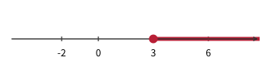

ホーム ＞ 数学II ＞ 複素数と2次方程式
\(x\) の2次方程式 \(x^2-2kx+k+6=0\) が、ともに正の解（重解を含む）をもつような実数 \(k\) の値の範囲を求めよ。
2解 \(\alpha,\beta\) がともに正：\(D\geqq0\) かつ \(\alpha+\beta>0\) かつ \(\alpha\beta>0\)。異符号：\(\alpha\beta<0\)（このとき \(D>0\) は自動的に成り立つ）。
2つの解がともに正 \(\iff D\geqq0,\ \alpha+\beta>0,\ \alpha\beta>0\)。（重解を含めて「ともに正」とする。）
\(\dfrac D4=k^2-(k+6)=k^{2} - k - 6=\left(k - 3\right) \left(k + 2\right)\geqq0\) より \(k\leqq -2,\ 3\leqq k\)。
3つの条件の共通部分：

【答案（テストに書く形）】
答